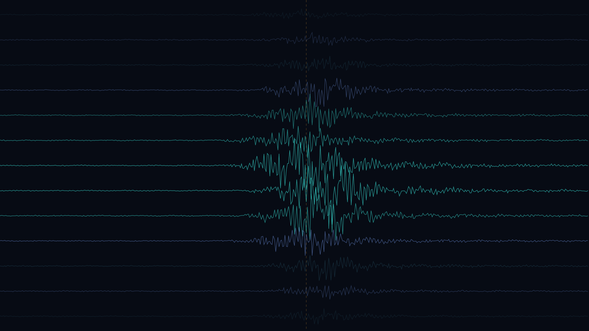
AI Agent 賦能
從個人研究軌跡，看見智慧化地震測報新藍圖
陳達毅
中央氣象署地震測報中心 測報技術科 科長
臺北市立大學地球環境暨生物資源學系 兼任助理教授
我們其實見過面
2022/1/15，東加 Hunga Tonga 火山噴發。
蘭姆波（Rayleigh–Lamb wave）以接近音速掃過太平洋。8500 公里外的臺灣，氣壓計、次聲波感測器、潮位計、海底壓力計、地震儀 在同一場事件中同時記到訊號。
而它被 Himawari 與 GOES-West 從太空拍了下來，擾動一路傳進電離層。
固體地球、大氣、電離層是同一個耦合系統 ——
你們從上往下看，我從下往上看。
陳達毅
學歷
- 東吳大學 物理學系 學士（1998–2003）
- 臺灣海洋大學 應用地球科學 碩士（2003–2005）
- 臺灣大學 地質科學 博士（2010–2015）
- 博士論文就是 Earthworm 地震預警平台
經歷
- 中央氣象署地震測報中心 2006 至今
- 技佐 → 技士 → 研究發展課課長
- → 測報技術科科長（2023/09 迄今）
- 地震預警系統研發、建置與實務作業
教學與服務
- 臺北市立大學 兼任助理教授，2018 起連續 8 年
- 地球物理通論、地震學、專題研究
- Journal of Seismology, Associate Editor
- 中華民國地球物理學會 理事
同時站在作業第一線與教學現場 —— 這是今天整場的視角來源。
三個問題
第 ② 題我會給具體數字，包含失敗的數字。
地震測報的工作現場
一場永遠不會結束的競速
競速
- 1999.9.21 集集 M7.3 → 2024.4.3 花蓮 M7.2，25 年間我們在跟同一件事賽跑
- P 波先到，S 波才是破壞主力
- 兩者之間的數秒到數十秒，是唯一能提前示警的窗口
- 這個窗口的長度由物理決定，我們能爭取的只有處理時間
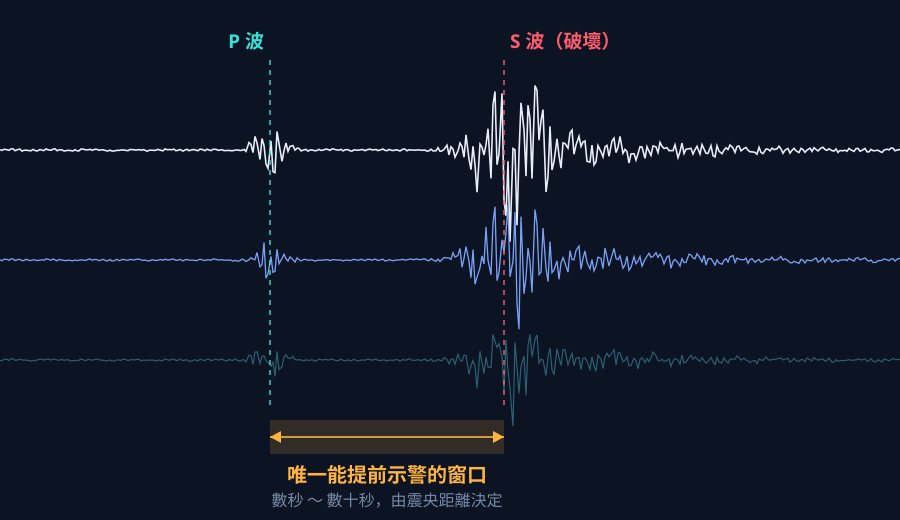
同一件事，兩個世代的畫面
25 年之間，臺灣的觀測密度、處理速度與發布管道都換了好幾代。但那幾秒鐘的物理沒有變。
臺灣的地震環境
- 菲律賓海板塊與歐亞板塊每年以 7–8 cm 速度聚合
- 東部海域：菲律賓海板塊向北隱沒到歐亞板塊之下
- 南部海域：歐亞板塊向東隱沒到菲律賓海板塊之下
- 持續擠壓碰撞 → 臺灣地震頻繁
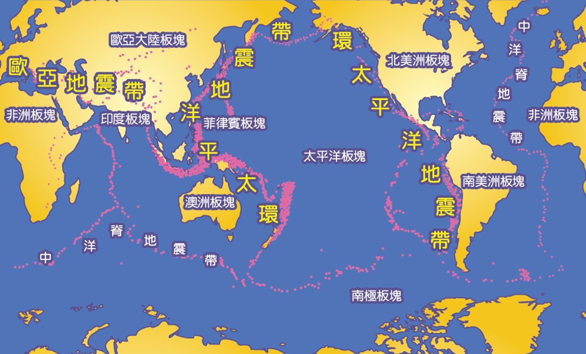
這是一個常態，不是意外
1900 年以來，臺灣共發生 7 次 罹難百人以上的災害地震。
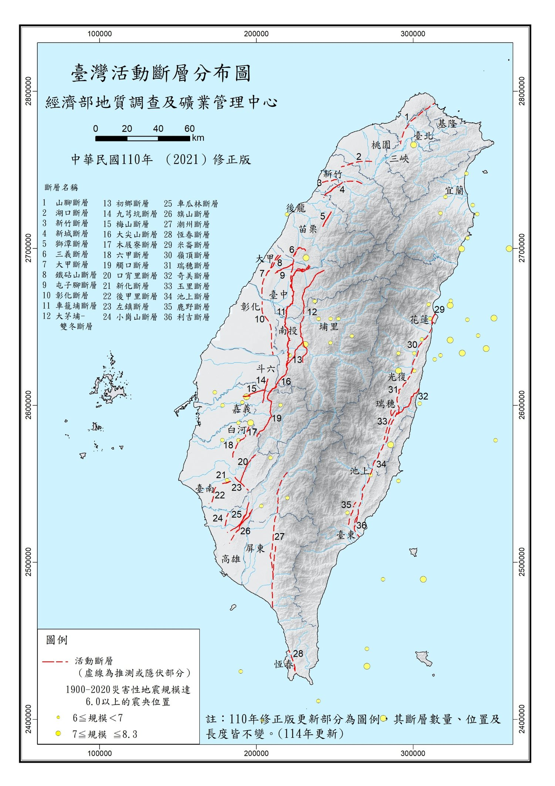
過去十年
- 2016/2/6 美濃 M6.6（7 級）— 621 人傷亡、749 戶房屋損失
- 2018/2/6 花蓮 M6.2（7 級）— 308 人傷亡、195 戶
- 2022/9/18 池上 M6.8（6 強）
- 2024/4/3 花蓮 M7.1（6 強）— 1069 人傷亡、207 戶
- 2025/1/21 大埔 M6.4（6 弱）
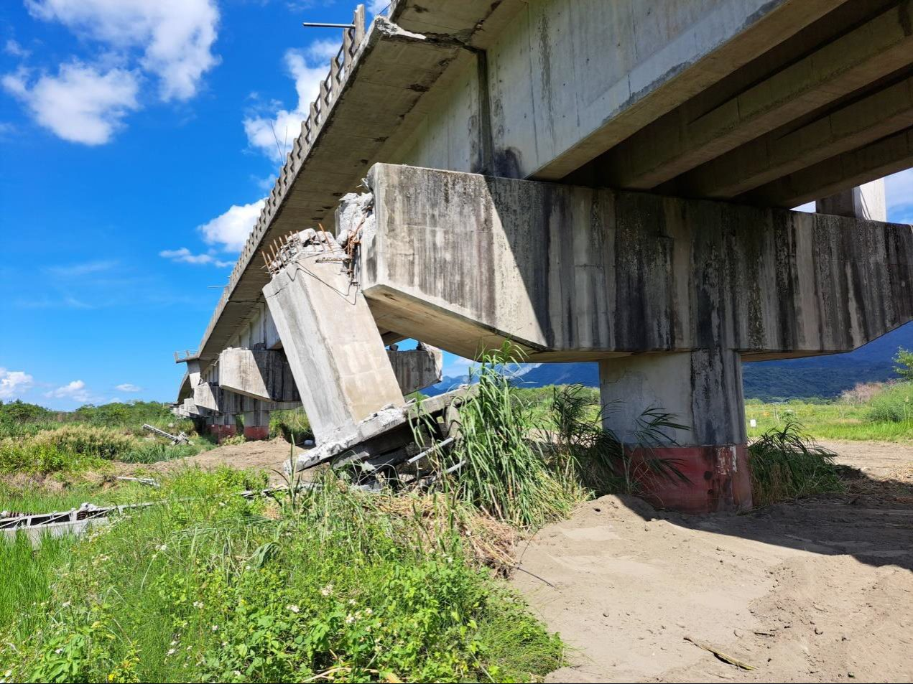
60 人，24 小時，全年無休
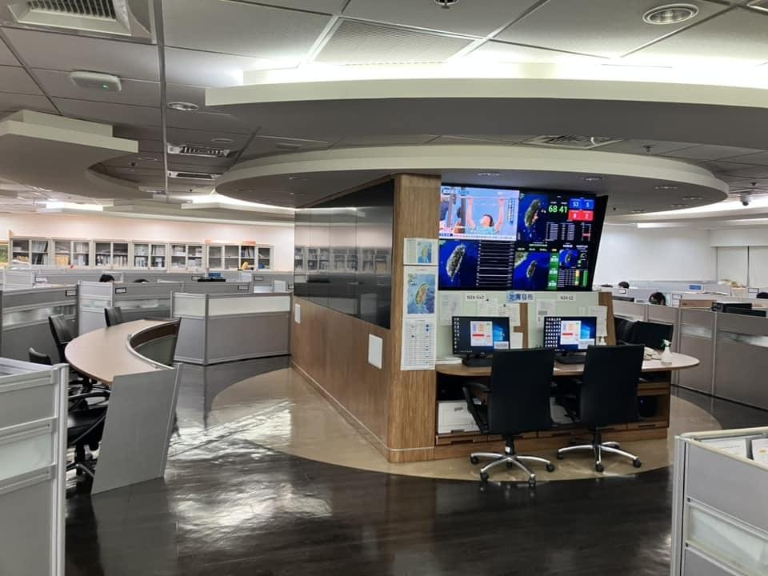
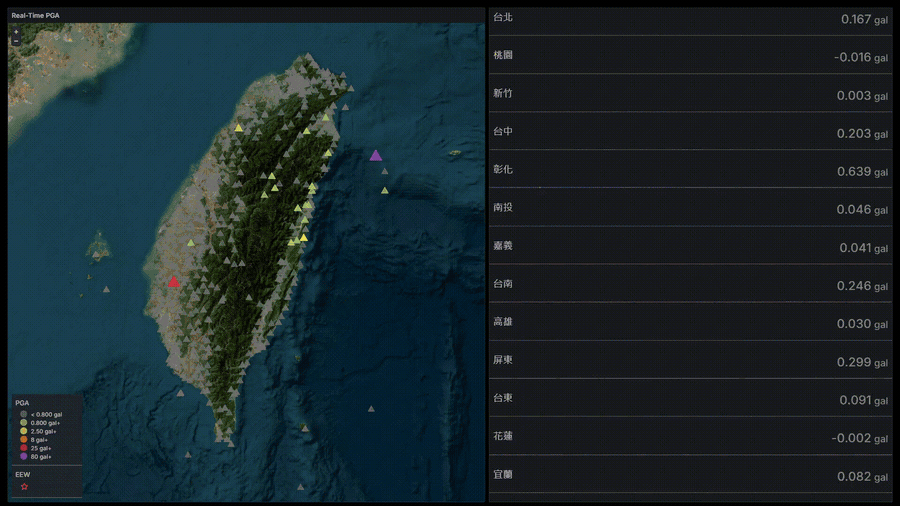
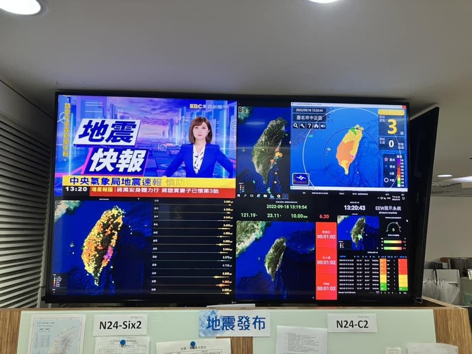
地震發生時，值班同仁必須在數十秒內掌握全局。
即時觀測網：巨量資料
- 約 3000 個 觀測頻道
- 每個頻道 100 Hz 取樣率
- 約 30 萬筆/秒 持續寫入，永不中斷
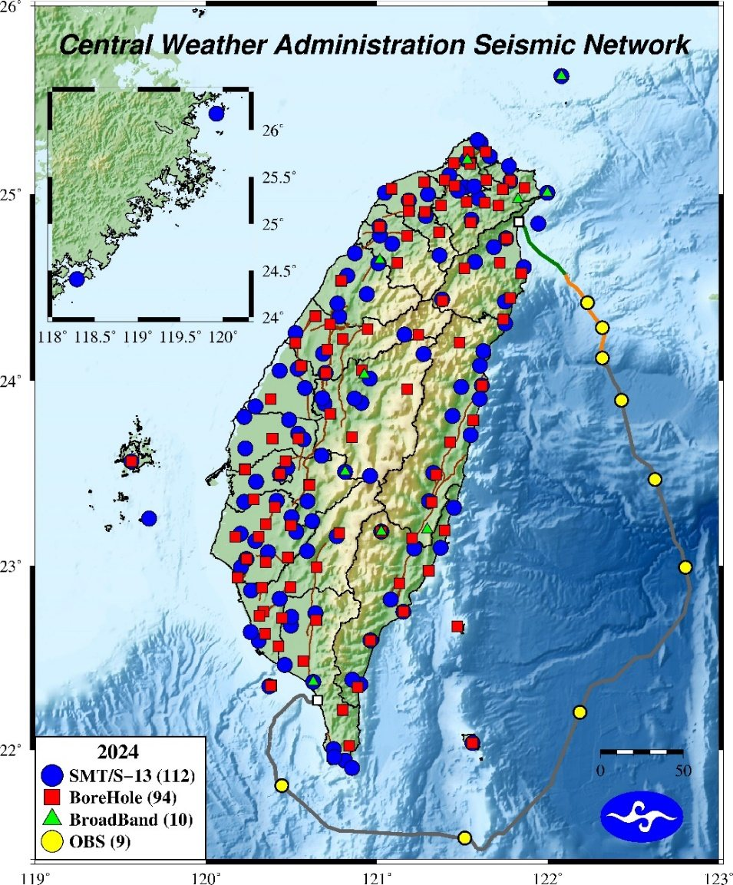
Earthworm：模組化即時系統
- 以共享記憶體 ring 串接：WAVE_RING / PICK_RING / HYPO_RING
- 每個模組是獨立行程，壞一個不會拖垮全系統
- 可熱插拔、可個別重啟、可獨立測試
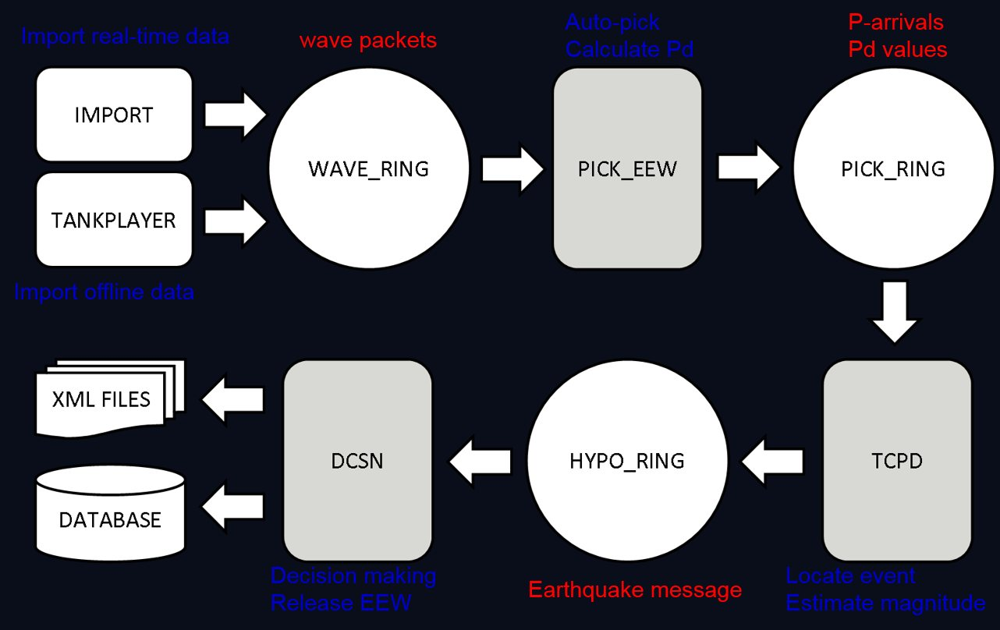
從偵測到發布，只有幾秒
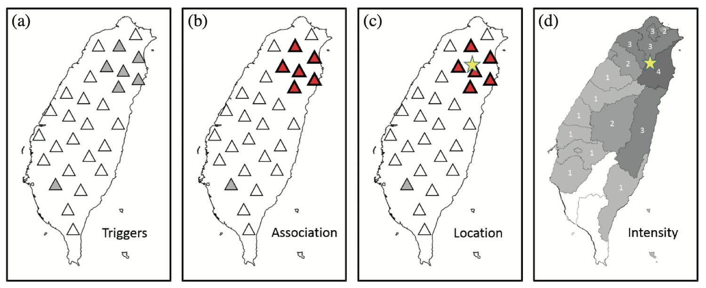
每一個環節都要從同一份延遲預算裡扣。省下來的每 0.1 秒，都是別人多出來的反應時間。（Chen et al., 2019）
警報長什麼樣子
2024.4.3 花蓮地震的實際發布畫面。前面講的所有延遲，最後都變成這幾秒鐘的提前量。
我們早就在用 dashboard 看系統
- Grafana 即時監控：觀測站資料延遲、海底地震儀水壓計、預警系統發布情形、特定測站波形
- 一個永遠在跑的系統，需要的不只是演算法，是看得見它在做什麼
- 這條線後面會接到 Agent —— 先有可觀測性，才談得上自動處置
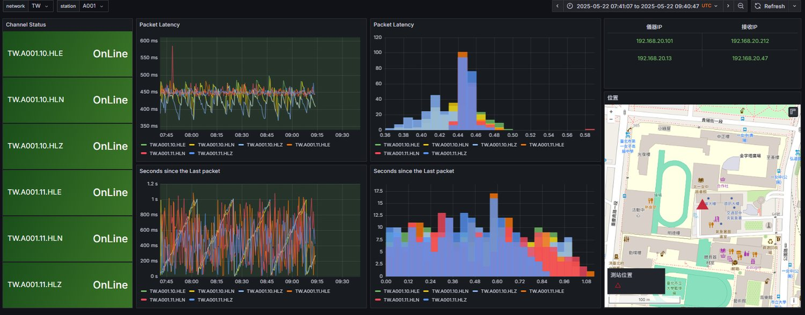
地震儀記錄的不只是地震
所有讓地面震動的東西，以及空氣中的壓力變化
它不是「地震偵測器」
- 地震儀是一個對地面運動極度敏感的感測器。它不會挑訊號 —— 任何讓地面震動的東西都會進去
- 固體地球：地震、火山、冰川、海浪（微震）
- 地表過程：土石流、山崩、洪水、颱風
- 人為：爆炸、施工、火車、重型機具，甚至演唱會
- 還有一類最容易被忽略 —— 空氣中的聲波與壓力變化，會耦合到地面，一樣被記錄下來
接下來三個案例，記錄到的都不是地震。
同一批儀器，同時看到兩種波
- 2014/7/31 高雄氣爆，23:55（UTC 15:55）
- 把各測站依震央距離排好、做 2–8 Hz 濾波，記錄剖面上出現兩條斜率完全不同的走時線
- 4.1 km/s：能量進入地下，以地震波傳播
- 296 m/s：能量走空氣，是聲波 —— 接近音速
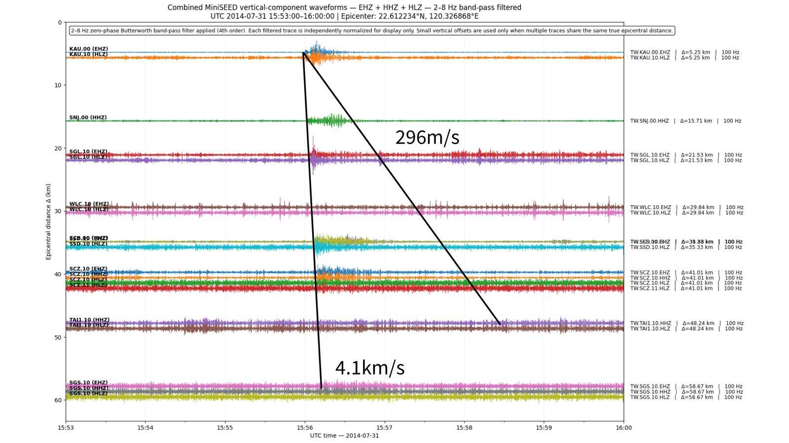
反直覺：慢的訊號，定位反而更準
- 2026/8/22 台南安南鎂鋁廢料爆炸，02:46
- 用各站到時差反演爆炸位置與時間，反演速度約 345 m/s（聲波）
- 反演結果與實際爆炸位置相差 76 ～ 215 公尺
- 但同樣方法用在高雄氣爆的地下震波（3.5 km/s），誤差是 2.3 公里
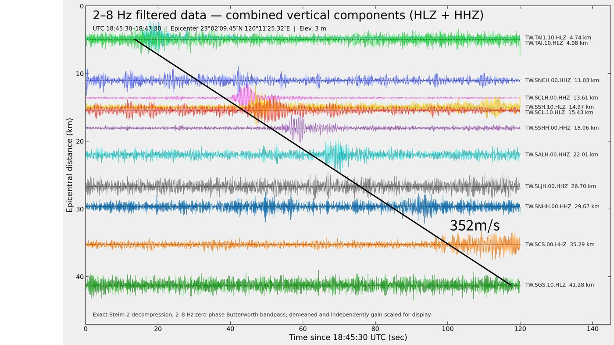
用地震網追一顆進入大氣層的物體
- 2025/8/19 23:10 JST，鹿兒島、宮崎一帶廣域目擊火球
- 火球以 10–30 km/s 穿越大氣，超音速 → 產生音爆（sonic boom）
- 衝擊波打到地面，被鹿兒島全境與宮崎南部的地震儀記錄下來
- 到時反演：震源在鹿兒島東南外海約 80 km；只用最近 5 站反演則往西北偏移約 15 km
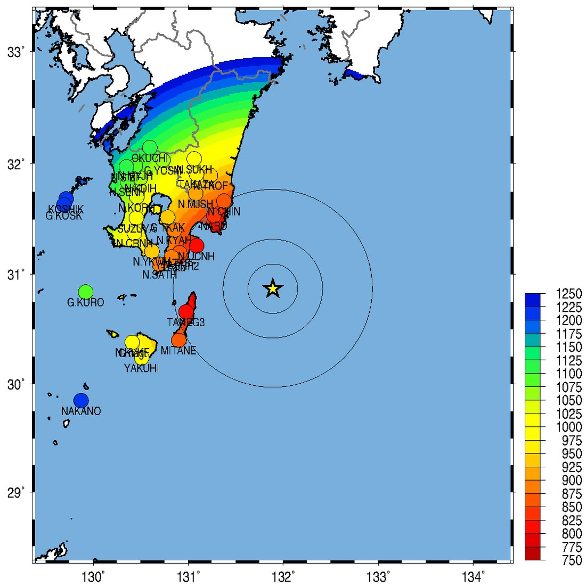
2021 札幌：天是晴的，但沒人看見它
- 2021/4/26 20:00，札幌全市聽到巨響並感到輕微搖晃 —— 沒有火災、沒有爆炸、沒有地震，自衛隊沒有演習，雷達沒有異常飛行器
- 天空晴朗，但完全沒有發光現象的目擊報告
- 靠地震資料反演：音爆源在北海道西岸外海約 100 km、高度 50 km，仰角大於 66°，速度高於戰鬥機
- 結論：最可能是一顆沒有被任何人看見的火球
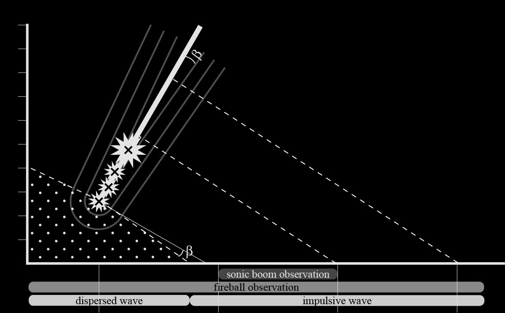
8500 公里外的一次噴發
- 2022/1/15 東加 Hunga Tonga 海底火山噴發，USGS 給的地震規模 Ms 5.8
- 火山灰與氣體噴到 57 公里高空；Himawari 與 GOES-West 衛星直接拍到大氣中擴散出去的波
- 聲音在 2000 公里外的紐西蘭、9700 公里外的阿拉斯加被聽見
- 臺灣距離震源約 8500 公里，幾乎在地球的另一側
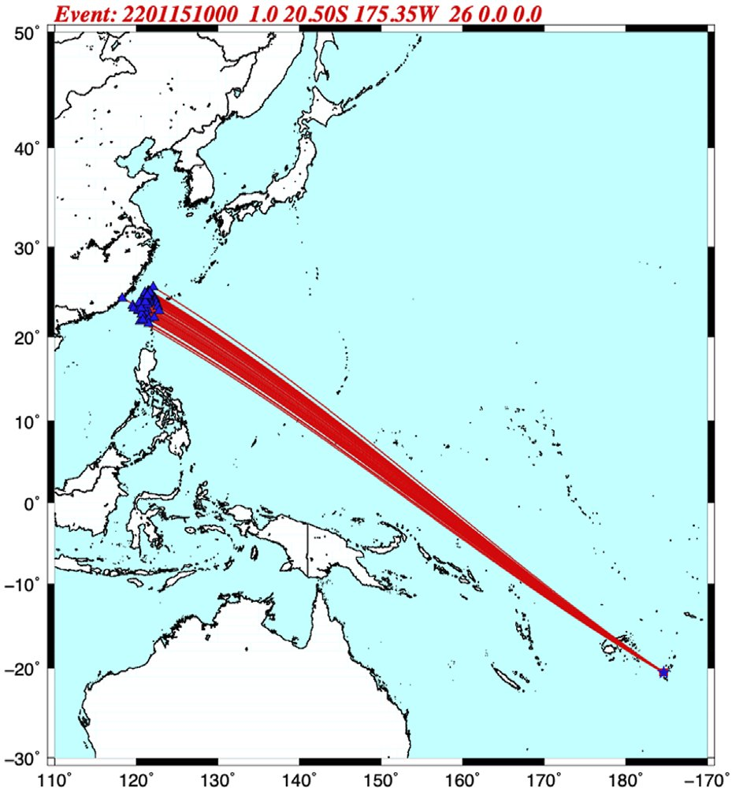
一道壓力波，橫越整座島
- 全臺氣象站的氣壓紀錄，每 10 分鐘一張快照，拼起來就是這段動畫
- 波前從東南方進來，約 40 分鐘掃完整個臺灣（19:50 → 20:30 CST）
- 振幅只有 −1 ～ +2 hPa —— 人感覺不到，但儀器量得清清楚楚
- Beamforming 解出：視速度 0.3 km/s、反方位角 126°，方向與速度在整段波列中都很穩定
這不是某一台儀器壞掉
- BATS 寬頻地震觀測網，全臺測站的東西分量依距離排好
- 噴發後約 7 小時，幾乎每一站都在同一個時間出現擾動
- 離島站（PHUB 澎湖、MATB 馬祖、KMNB 金門）也同步記到
- 地面當時沒有任何地震
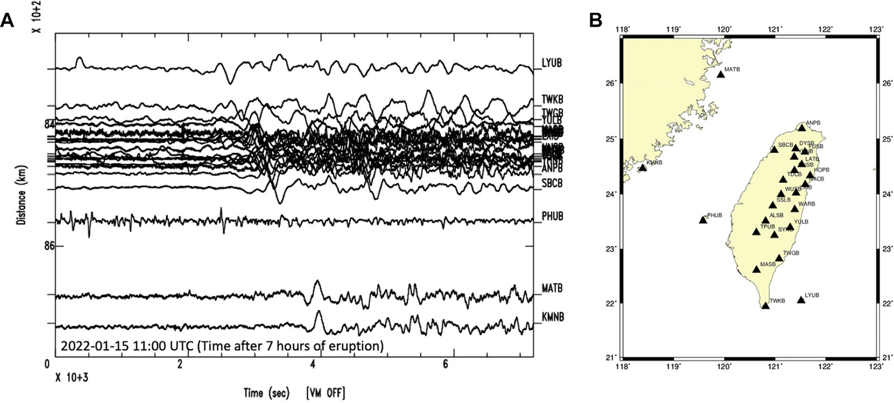
同一個測站，三種儀器，同一個訊號
- WARB 測站同時架了次聲波感測器、氣壓計、寬頻地震儀（三分量）
- 最上面兩軌：次聲波與氣壓計清楚記到壓力波通過
- 下面三軌是地震儀 —— 東西分量在同一時刻出現明顯擾動，垂直分量幾乎沒有
- 地面沒有地震。那個擾動是大氣壓力波推著地面產生的
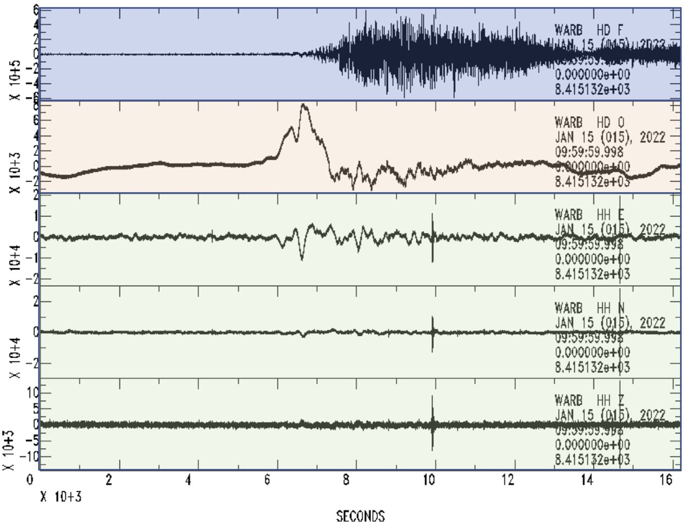
潮位計跟著氣壓計一起動
- 花蓮氣象站的氣壓計（上兩軌）與花蓮港三座潮位計（下三軌）放在一起看
- 紅線是氣壓第一波的到時 —— 潮位訊號幾乎同時開始震盪
- 傳統海嘯由海床錯動造成，速度受淺水波方程控制，比音速慢得多
- 但這次海底壓力計與地面氣壓計的走時線是同一條（0.31 km/s）
跨系統的觀測，才解得開跨系統的現象。
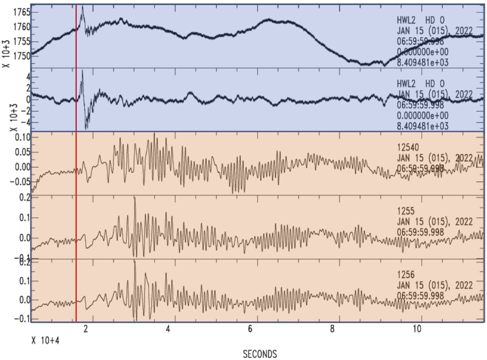
這份工作真正的難題
不是演算法不夠好，是邊界條件永遠比你想像的多
誤報的代價
- 115/2/23，馬來西亞婆羅洲外海地震 → 誤發中小學 EEW
- 遠震訊號進入了近場演算法的邊界條件
- 技術上是一個 corner case，社會上是一次信任損失
誤報一次，信任度掉的比技術指標快。
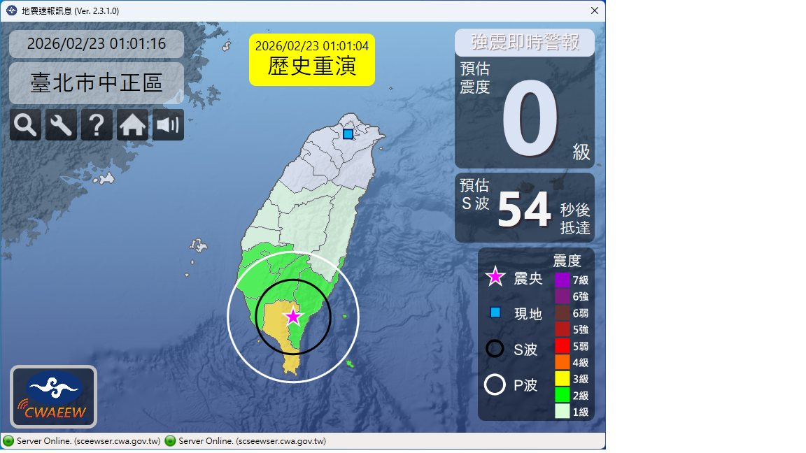
強度之外，還有持續時間
- 地震災害必須同時考慮強度與持續時間
- 2024/4/3 花蓮：第一報與第二報之間的判斷困境
- 單一標量預測（只給一個震度數字）本質上不夠
我們要預測的其實是一條時間序列，不是一個數字。
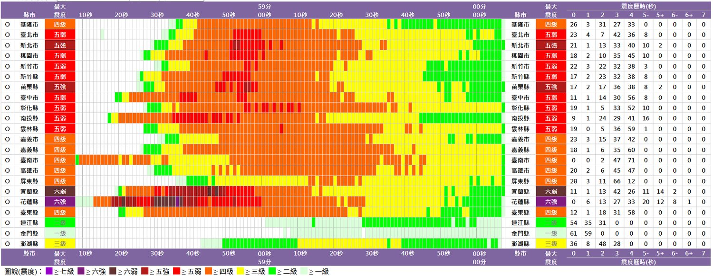
參數調校是人工的
- 傳統演算法在自動辨識地震波相上，有大量參數要調
- 調完要重跑歷史事件驗證，一輪下來以天為單位
- 準確性到一個程度之後，怎麼調都上不去
這就是機器學習的切入點 —— 不是因為它時髦，是因為傳統方法撞牆了。
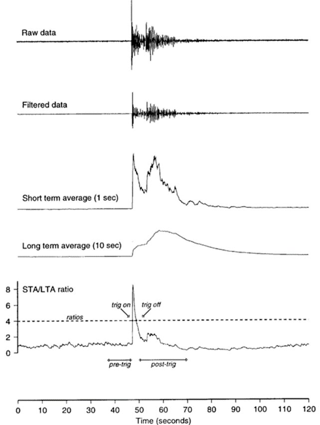
地震報告為什麼會慢？
人工檢核不可省：定位、規模、深度、有感範圍，每一項都要有人負責。
〈地震報告怎麼慢了？揭開製作地震報告的神祕面紗〉，《科學月刊》625 期
自動化不是為了取代人工檢核，
是為了讓人工檢核有時間做該做的判斷。
我的 AI 工作流程演進
2022 → 2026
用 2026 年的方式，去思考每一項工作
ChatGPT 登場。寫程式、查指令、翻譯、寫英文信都用「問」的。產出仍需自己手動複製貼上、在本機執行。AI 是助理，人類是手腳。
Cursor、Windsurf、GitHub Copilot Agent Mode 等 AI 原生編輯器登場。能直接改多檔程式、執行終端機指令、跑測試、部署到雲端。AI 開始接管「執行」。
模型能力持續提升，Agent 能長時間自主工作、自己除錯、自己驗證。人類回到「問對問題」與「決定要不要相信」。
我現在同時跑四條路線
本機工作台
外接訂閱制 LLM：ChatGPT Pro、Claude Pro、Ollama Cloud、OpenCode。直接讀電腦裡的原始觀測資料。
雲端開發
雲端資料處理與系統開發，結果存 Drive、程式進 GitHub、網頁部署 GitHub Pages、後端上 Hugging Face Space。
純網頁
什麼都不用安裝。搭配 Google Colab 執行程式、Google Form / Doc / Apps Script 做系統。
離開電腦
手機就能發動研究與資料分析。Hermes 跑在本機，Grok bot 是雲端服務、不用安裝，直接接 Drive 與 GitHub。
這四條不是替代關係，是依情境切換。而且全部都有免費額度或開源方案。
本機工作台：資料不出機器
- 直接分析電腦端的原始觀測資料，不用上傳
- 適合：敏感資料、大檔案、需要本機環境的分析
- 外接訂閱制 LLM，算力在雲端、資料在本地
雲端開發：從開發到上線一條龍
- Cursor 開發 → GitHub 版控 → Google Drive 存結果
- → GitHub Pages 發布前端 → Hugging Face Space 跑後端 API
- 整條鏈路零維運成本
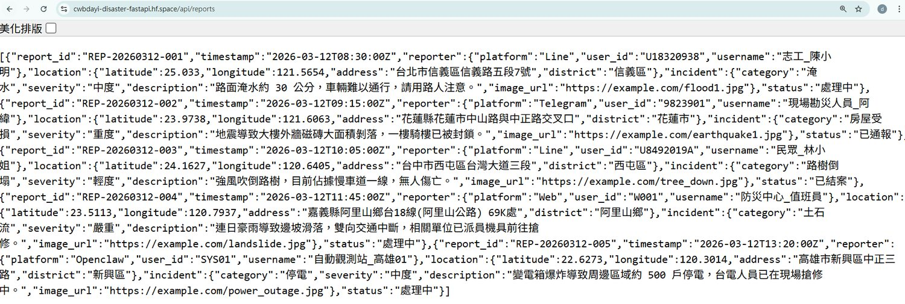
純網頁：零安裝門檻
- 沒有安裝權限的環境也能做完整研究
- Google Colab 出借 GPU，Apps Script 做自動化
- 教學現場的解方：學生的筆電什麼都不用裝
Hermes Agent × Telegram × Obsidian
研究的進入門檻，從「坐在電腦前」降到「拿出手機」。
本機的 Hermes，雲端的 Grok bot
- 在哪裡跑本機。我的筆電或工作站
- 要安裝要。環境、相依套件、服務都自己顧
- 碰得到什麼本機的所有檔案，包含不能上雲的原始觀測資料
- 適合敏感資料、大檔案、要接本機正在跑的系統
- 代價機器關了就停。要自己維護
- 在哪裡跑雲端。手機、平板、任何瀏覽器都能用
- 要安裝不用。開通就能用
- 碰得到什麼直接接 Google Drive 與 GitHub，授權一次就能讀寫
- 適合文件、程式碼、要跟別人協作的東西
- 代價資料要上雲。管制資料不能走這條
判斷標準只有一條：這份資料能不能離開我的機器。能，就走雲端；不能，就留本機。
EEW 多代理群：每 30 分鐘真的在跑
監控 cron、判讀 log、異常推播、日報總結
.rep 事件結構化轉出、維持 heartbeat loop
容器健康檢查、eew_fault_recovery.sh 自動處置、事件圖表
Hermes 鏈路轉發、跨代理任務派遣、彙整每日工作記錄
四個 Agent 有各自的啟動腳本、模型設定與環境隔離，透過 delegate_task 互相呼叫。
事件進來，報告出去，人只在決策點介入
人負責的是：決定要不要相信它，以及下一個問題要問什麼。
四個可複製的工作流
全部錄成影片，你們掃碼帶走
掃碼就能看
成果
教學與研究，兩邊都被改寫了
學生的作業長在網路上
- 地生系同學的作業，直接部署成 Hugging Face Space
- 交出來的是一個網址，不是一個檔案
- 同學之間可以互相打開來看、改、延伸
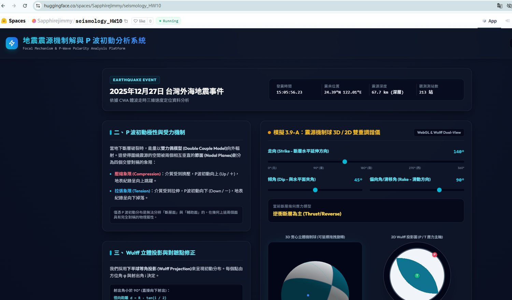
我自己的教法也被改寫了
- 2018 起連續 8 年教地球物理學與地震學
- 演化路徑：講授 → 程式作業 → 導入生成式 AI
- 2026 暑假參與「國小教師加註自然領域專長 28 學分班」授課
- 指導學生通過國科會大專學生研究計畫（110 年、113 年各一件）
教學內容沒變，學生能走到多遠變了。
用 AI 觀測「學生怎麼學」
- 投稿 2026 年第 42 屆科學教育國際研討會，兩篇：
- 生成式 AI 輔助地球科學數位敘事之縱向發展
- 從電路除錯到量測有效性質疑：地震警報器 STEM 實作歷程
- 以生成式 AI 進行學生學習評量與學習軌跡分析
AI 不只是我用的工具，
也是我研究「學生怎麼學」的觀測儀器。
大型地震模型 LEM：從語音到地震
- 動機：地震台站產生海量資料，但絕大多數未經標註
- SeisWav2Vec 2.0：把 Wav2Vec 2.0 的對比學習遷移到地震波形
- 架構：特徵編碼器 → 12 層 Transformer 上下文編碼器 → 遮罩與量化
- 只需少量任務導向資料即可微調到 SOTA
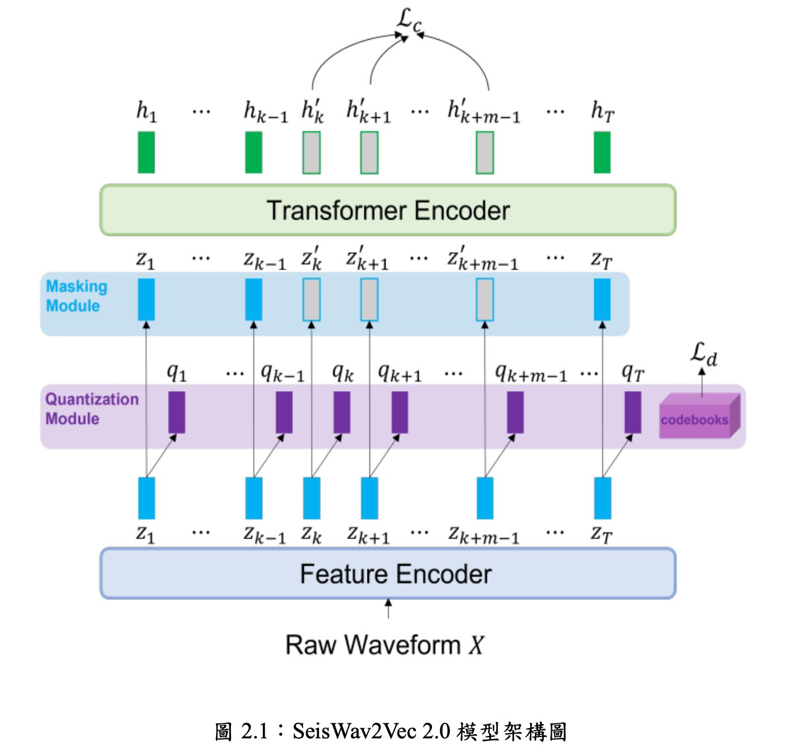
國科會計畫：把它做成可驗證的東西
- 115 年｜基於 Wave2vec 2.0 自監督學習之地震動強度與持續時間定量預估研究（主持人，NT$470,000）
- 112 年｜即時地震波場於地震預警系統中的應用（主持人，NT$483,000）
- 近五年共同發表 15 篇期刊論文，多數與機器學習應用於地震預警相關
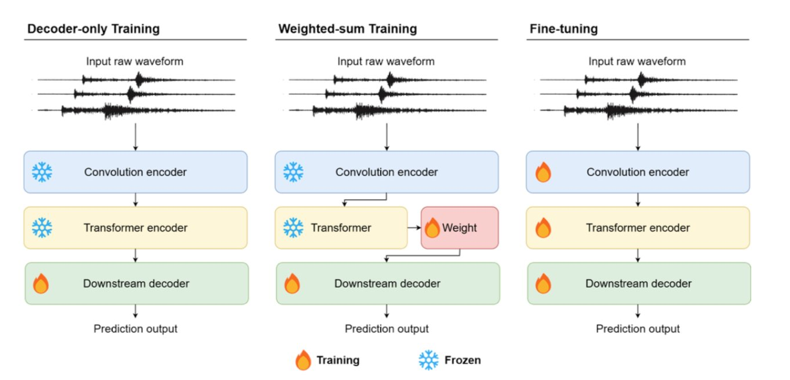
邊緣地震儀：一顆 Raspberry Pi 的完整 EEW
- 硬體：Raspberry Pi 4 (4GB) + RaspberryShake RE81D，成本極低
- Earthworm 8.0 從原始碼在 ARM64 原生編譯（官方沒有 arm64 映像）
- 三層警報並行：網路型 EEW（多站，10–30 秒）／即時震度（單站，1–2 秒）／現地型 τc-Pd
- 全程由生成式 AI（Claude Code）協同開發：架構設計、程式撰寫除錯、文件簡報
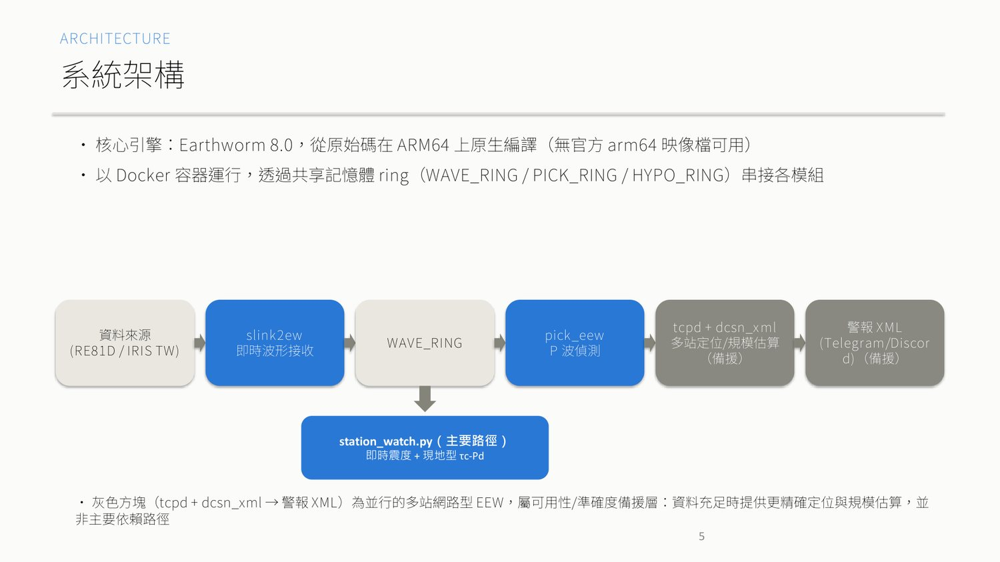
它真的抓到地震了
- 離線回放：2024 花蓮 M7.4 → 撿波 → 4 站定位 → Mpd 6.2 → 產出警報 XML，定位誤差約 11 km，bit-identical 可重現
- 真實案例：2026/7/26 雙溪 M5.6，上游多站資料源（IRIS）剛好斷線，網路型 EEW 完全沒解算
- 但單站即時震度層正確量到 4 級
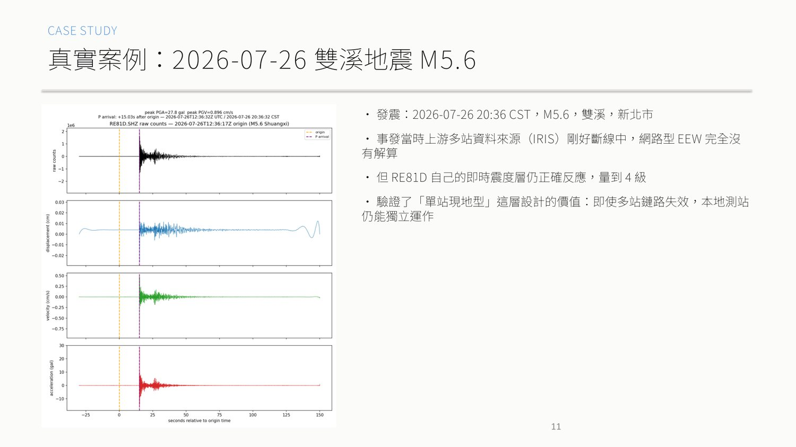
新藍圖
先講兩個失敗，再講未來
AI 也會出錯，而且錯得很安靜
- 即時震度告警一週內每天觸發 76–325 次，全部沒有對應的真實地動
- 排查：交叉比對三個獨立資料源（封存波形、dashboard 週期採樣、pick_ew 獨立量測）→ 三者都顯示現場平靜 → 判定是演算法內部問題
- 緩解：觸發門檻 2 級 → 3 級，加入高頻雜訊判別器
- 根本原因至今未確定。診斷 log 已經埋好，等它下次重現。
跑了 1640 次，一次都沒真的預測
SSIF 震度預測模型接上系統後，累積 1640 次觸發，100% 被跳過。
| 時間窗口 | 預測震度 | 信心 | 結果 |
|---|---|---|---|
| EW15（15 秒） | 5- 級 | 91.6% | 成功 |
| EW20（20 秒） | 4 級 | 99.4% | 成功 |
| EW25（25 秒） | 4 級 | 99.7% | 成功 |
| EW30（30 秒） | 4 級 | 98.3% | 成功 |
| EW35（35 秒） | — | — | 跳過 |
2026/8/19 人為搖動測試，修復後 5 個窗口成功 4 個（valid_fraction 0.25 → 0.8–0.9）。
AI 幫我寫的程式，AI 也幫我找到 bug —— 但要有人問對問題。
下一代測報中心
補官方觀測網的覆蓋空白：偏鄉、室內、特定建物。單站即可獨立運作。
自監督預訓練把未標註資料變成資產，集中算力做高階推論與長期建模。
健康檢查、異常自動處置、資料結構化、圖表產出、每日彙報。
決定要不要相信、決定要不要發布、決定下一個問題是什麼。
三件正在發生的事
感測器下沉
Raspberry Pi 等級的裝置，就能跑完整的 EEW 鏈路。觀測網的密度不再被預算綁死。
模型上移
自監督預訓練讓未標註資料變成資產。過去被丟掉的訊號，現在是訓練材料。
開發加速
人機協作的開發模式可以複製。硬體、演算法、模型更新，都能持續用生成式 AI 加速與除錯。
AI 到底改變了什麼？
沒變的
- 物理
- 資料品質的要求
- 驗證標準
- 誤報的代價
變了的
- 從想法到可運作原型的時間
- 一個人能同時推進的專案數
- 除錯的路徑
AI 沒有讓我變聰明。
它讓我的每一個念頭都有機會被實作出來驗證。
三句話
先有真實問題，再找 AI。
沒有問題的時候，AI 只會給你很像樣的廢話。我所有跑得動的專案，起點都是一個具體到煩人的作業需求。
工具會換，判斷不會。
三年換了三代工具。唯一累積下來的，是「知道什麼時候該懷疑結果」。那 1640 次沒跑出預測的觸發，不是 AI 發現的。
把成果留在看得見的地方。
GitHub、Hugging Face、一個網址。你的研究能不能被看見，跟做得好不好一樣重要。
謝謝聆聽
Q & A
陳達毅｜中央氣象署地震測報中心 測報技術科